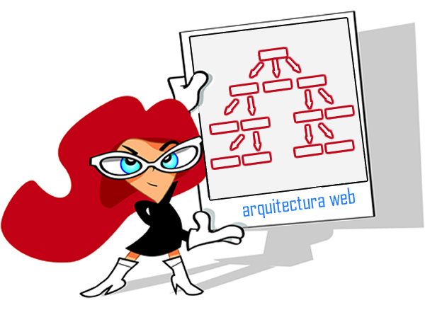

 Ella se encarga de definir la organizacion fundamental de Hardware y Software en un sistema informatico, de la interacción de sus componentes y sus comportamientos, a fin de satisfacer los requerimientos funcionales y no funcionales de sus clientes.